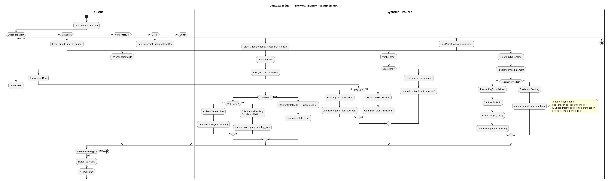
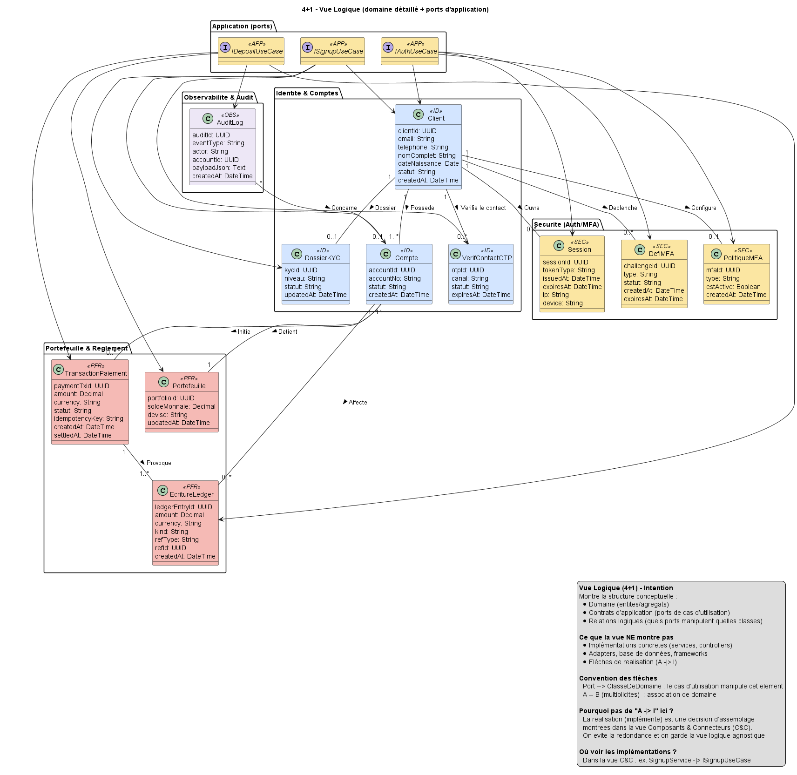
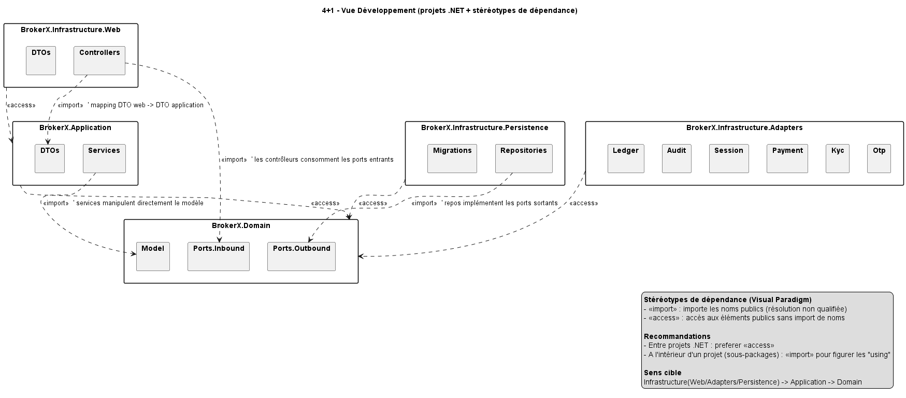

Version: 1.0
Date: 28 septembre 2025
Équipe: Projet LOG-430
Status: Phase 1 - Développement
BrokerX est une plateforme de démonstration de trading sécurisé implémentant trois cas d'utilisation prioritaires :
| Qualité | Exigence | Justification |
|---|---|---|
| Testabilité | Domaine métier 100% testable sans infrastructure | Architecture hexagonale avec mocks |
| Sécurité | MFA obligatoire, chiffrement OTP, JWT | Conformité financière |
| Idempotence | Pas de double crédit/débit | Intégrité des transactions |
| Évolutivité | Intégration facile systèmes externes | Pattern Ports & Adapters |
| Observabilité | Audit trail complet | Conformité réglementaire |
| Contrainte | Description | Impact |
|---|---|---|
| Clean Architecture | Dépendances Domain ← Application ← Infrastructure | Tests unitaires faciles |
| Pas de frameworks dans Domain | Aucune dépendance EF/HTTP dans le cœur métier | Portabilité maximale |
| Repository Pattern | Abstraction de la persistance | Testabilité et flexibilité |
| Immutabilité Ledger | Table EcritureLedger en append-only | Audit trail inaltérable |
Le système BrokerX s'insère dans l'écosystème financier avec les acteurs externes suivants :

Acteurs externes :
| Interface | Type | Description | Format |
|---|---|---|---|
| Web API | REST | Endpoints clients | JSON/HTTP |
| Email OTP | SMTP | Codes d'activation | HTML Email |
| Payment Gateway | HTTP | Dépôts/retraits | JSON Webhook |
| Audit Log | File | Journalisation | Structured JSON |
La solution repose sur 3 ADR (Architecture Decision Records) principales :
| Pattern | Usage | Avantage |
|---|---|---|
| Hexagonal | Structure globale | Testabilité, évolutivité |
| Repository | Accès données | Abstraction persistance |
| Factory/Builder | Création entités | Domaine encapsulé |
| Adapter | Intégrations externes | Découplage systèmes |

Domaines métier :

Flux asynchrones :

src/
├── Domain/ # Cœur métier pur
│ ├── Model/ # Entités et agrégats
│ ├── Ports.Inbound/ # Contrats use cases
│ └── Ports.Outbound/ # Contrats infrastructure
├── Application/ # Orchestration métier
│ └── Services/ # Use cases concrets
├── Infrastructure.Persistence/ # EF Core + Repositories
├── Infrastructure.Adapters/ # Intégrations externes
└── Infrastructure.Web/ # API REST + Frontend

Principes de développement :
| Couche | Technologies | Responsabilités |
|---|---|---|
| Domain | C# pur, aucune dépendance | Règles métier, entités |
| Application | C# + Domain | Use cases, orchestration |
| Infrastructure | EF Core, BCrypt, JWT | Persistance, intégrations |
| Web | ASP.NET Core, Bootstrap | API REST, interface utilisateur |

# docker-compose.yml
services:
brokerx_app:
build: .
ports:
- "5001:8080"
environment:
- ASPNETCORE_ENVIRONMENT=Development
volumes:
- ./logs:/app/logs
| Aspect | Développement | Production |
|---|---|---|
| HTTPS | Non requis | TLS 1.3 obligatoire |
| Secrets | Variables env | Azure Key Vault |
| JWT | Clé statique | Rotation automatique |
| Base de données | InMemory | Chiffrement au repos |
// Exemple : OTP sécurisé avec salt
var hashedOtp = BCrypt.Net.BCrypt.HashPassword(plainOtp, BCrypt.Net.BCrypt.GenerateSalt());
// Domain : Exceptions métier
throw new InvalidOperationException("MFA policy not found");
// Controller : Mapping HTTP
catch (InvalidOperationException ex) {
return BadRequest(new { error = ex.Message });
}
await _audit.WriteAsync(
AuditLog.Ecrire("AUTH_MFA_PASSED", "system",
payload: new { clientId, challengeId, sessionId }), ct);
tests/
├── Domain.Tests/ # Tests unitaires purs
├── Application.Tests/ # Tests d'intégration use cases
├── Infrastructure.Tests/ # Tests repositories/adapters
└── E2E.Tests/ # Tests bout en bout API
// appsettings.json
{
"ConnectionStrings": {
"DefaultConnection": "Server=localhost;Database=BrokerX"
},
"Jwt": {
"SecretKey": "your-secret-key-min-256-bits",
"ExpirationHours": 2
},
"Email": {
"SmtpHost": "smtp.mailtrap.io",
"SmtpPort": 587
}
}
L'architecture BrokerX respecte les principes Clean Architecture avec une séparation claire des responsabilités. L'utilisation d'EF Core InMemoryDatabase permet un développement rapide tout en conservant une structure prête pour la production. Les ADR documentent les décisions importantes et les tests automatisés garantissent la qualité du code.
Document généré automatiquement le 28 septembre 2025